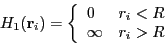
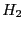
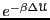
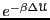
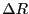

Download the code hdisk.c by clicking
here. This code simulates disks confined
to a circle. The Hamiltonian for this system may be expressed as
| (85) |
|  | (86) |
| (87) |
acts to keep the particles confined, and  prevents them
from overlapping. One nice thing about using hard-disk Hamiltonians
is that there is never a reason to evaluate a Boltzmann factor. Any
trial move that results in an overlap or a particle crossing the
boundary gives an ``infinite''
 , so
 is identically 0 and the trial is
unconditionally rejected.
, so
 is identically 0 and the trial is
unconditionally rejected.
hdisk.c accepts as user input any two of the following three
parameters:  , the radius of the circle;
, the radius of the circle;  , the areal number
density of particles (# per square
, the areal number
density of particles (# per square  ); and
); and  , the number of
particles. The user may also specify
, the number of
particles. The user may also specify  , the scalar
displacement, and nCycle, the number of MC cycles, where
one cycle is
, the scalar
displacement, and nCycle, the number of MC cycles, where
one cycle is  attempted particle displacements. The only output
of the code currently is the acceptance ratio:
attempted particle displacements. The only output
of the code currently is the acceptance ratio:
One important aspect of any MC simulation code is how the particle positions are initialized. Here, it is best to assign initial positions to the particles such that the initial energy is 0 (i.e., there are no overlaps nor particles out of bounds.) Try to figure out how the function init() in the program hdisk.c accomplishes this.
As a suggested further exercise, use hdisk.c to determine a
reasonable displacement to achieve a 30% acceptance ratio at a
density of 0.5. Compare your results across differently sized systems
and runs with different numbers of cycles. For fewer than 10 cycles,
you will have large acceptance ratios because the initial condition
is not yet fully destroyed.
cycles,
you will have large acceptance ratios because the initial condition
is not yet fully destroyed.
Below is a plot of acceptance ratio vs.  for densities
 of 0.2, 0.4, 0.6, from a simulations of 200 particles. 10,000
cycles were performed for each run. Are your results consistent
with this data?
of 0.2, 0.4, 0.6, from a simulations of 200 particles. 10,000
cycles were performed for each run. Are your results consistent
with this data?
|